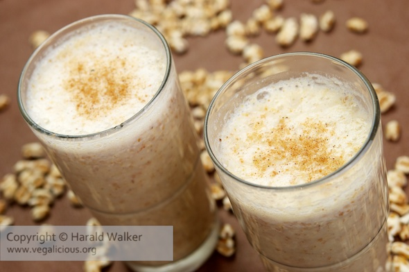

Wheat Shake

Description
Made with sweetened condensed milk, whole milk, and puffed wheat cereal,
this creamy, traditional treat is rich, comforting, and full of nostalgia.
Ingredients
- 1 cup whole milk*
- 3 tablespoons sweetened condensed milk
- 3 tablespoons granulated sugar, or more to taste
- 1 cup puffed wheat cereal
- Pinch of salt
- 1/2 cup ice
Steps
-
Add the milk, sweetened condensed milk, sugar, puffed wheat cereal, salt, and ice to a high-speed blender.
Blend on high until smooth and creamy, about 1-2 minute.
-
If you prefer a thinner consistency, you can add a splash more milk.
The puffed wheat cereal will mostly dissolve, giving the milkshake its signature texture.
-
Pour into glasses and serve immediately.
Enjoy on its own or with your favorite Cuban sandwich.
Home